Abstract
Vision-Language-Action models generalize across static manipulation but fail when objects move during execution. They map the current observation to an action and assume the scene is stationary, so latency exceeds the time available to grasp.
AHEAD wraps a frozen VLA with a motion-aware latent world model that forecasts future patch tokens from optical-flow kinematics, concentrates compute on language-and-motion salient patches, and feeds the prediction to the unchanged action decoder.
Method
A 4.9M-parameter predict-then-act wrapper around a frozen 7B OpenVLA. RAFT flow gives per-patch velocity and acceleration; a language-and-motion mask keeps task-relevant tokens; conditional flow matching rolls them forward until uncertainty says stop. The frozen action decoder never sees the stale frame (~158 ms per step).
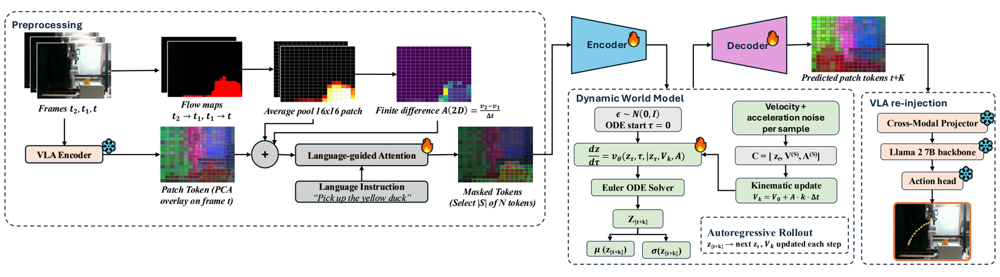
Simulation results
Successes first (79-97% in-distribution), then stress cases where prediction degrades.
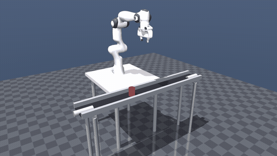
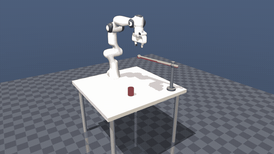
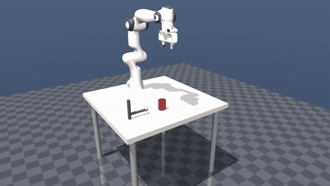
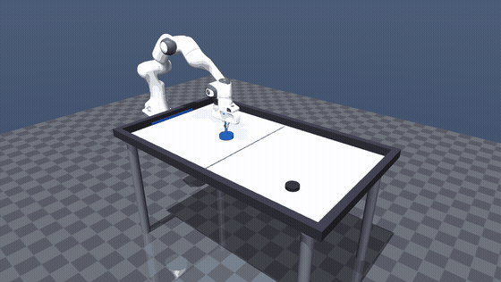
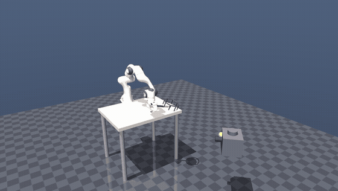
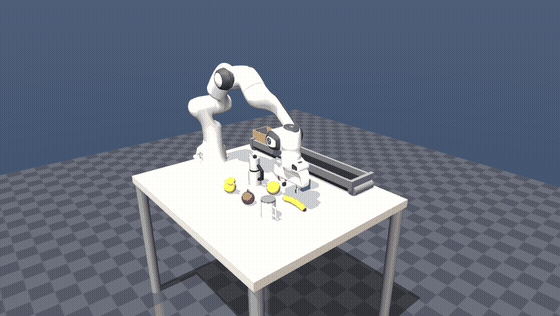
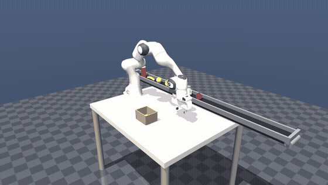
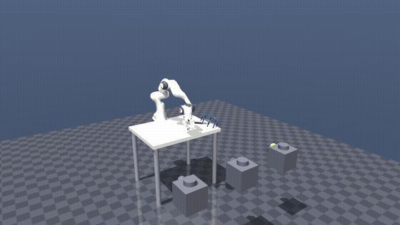
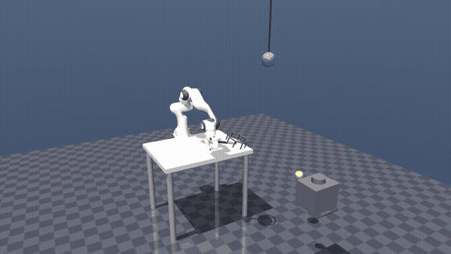
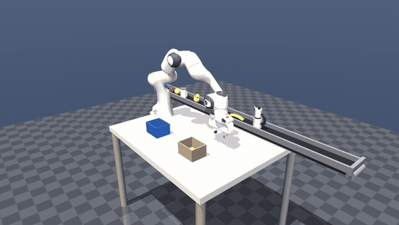
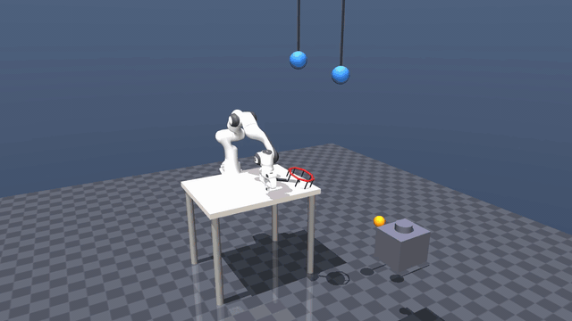
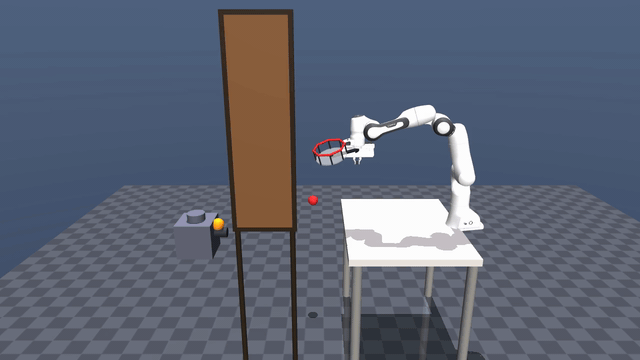
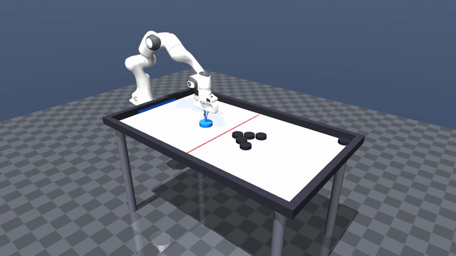
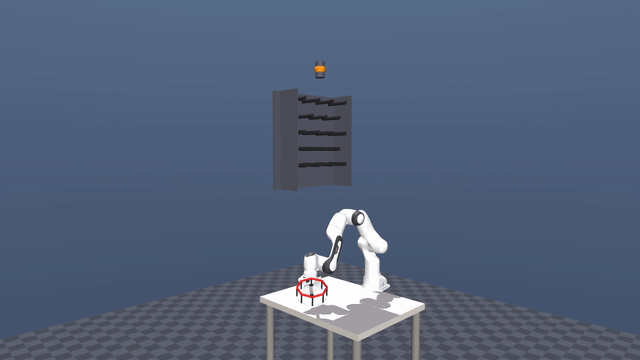
Conveyor belt: AHEAD vs baseline
Same scene, same seed. Open-loop VLA grasps where the object was; AHEAD contacts where it will be.
Results
(best baseline 31-58%)
(best baseline 12/30)
(all baselines 0/30)
(all baselines 0/30)
~158 ms / step
BibTeX
@inproceedings{syed2026ahead,
title = {Intercepting the Future: Latent-Space Predictive World Model for Dynamic {VLA} Manipulation},
author = {Syed, Shahram Najam and Jakobsson, Arthur and Hao, Haoran and Ichnowski, Jeffrey},
booktitle = {Proceedings of the 10th Conference on Robot Learning ({CoRL} 2026)},
address = {Austin, TX, USA},
year = {2026},
eprint = {2606.02486},
archivePrefix = {arXiv},
primaryClass = {cs.RO},
url = {https://arxiv.org/abs/2606.02486}
}